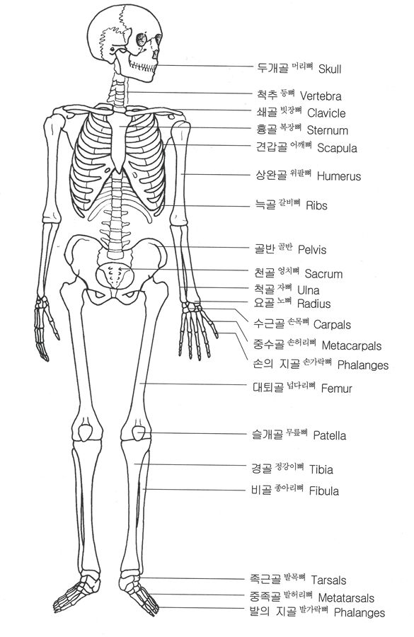

뼈는 골격을 형성하는 것 외에도 많은 기능을 하는 중요한 조직이다. 뼈가 없으면 인간은 호흡도 할 수 없고, 음식도 섭취할 수 없고, 피가 생성이 안되는 등 여러가지 이유 때문에 죽는다. 기본적으로 신체를 지탱하며 뇌나 폐 등 연약한 장기를 보호하는 역할도 한다. 또한 골격근이 부착, 고정되는 부위로 신체가 자유로이 움직일 수 있게 한다. 그 외에 뼛속의 골수에서 적혈구, 백혈구를 비롯한 혈구를 생성하기도 하며 신체의 무기질 대사에 관여하는 등 흔히 생각하는 것보다 훨씬 중요한 역할을 하는 기관이다.
